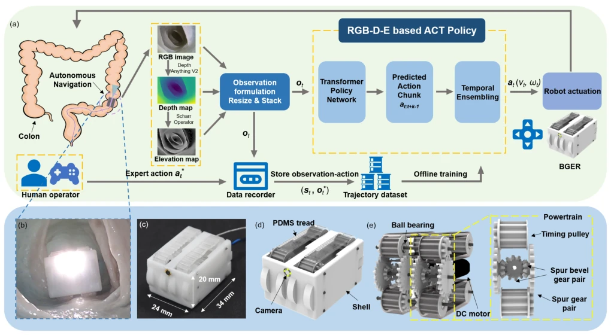
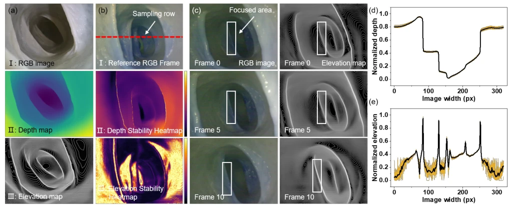
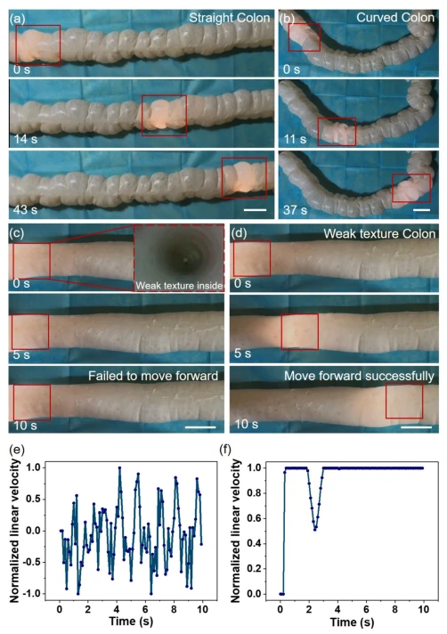
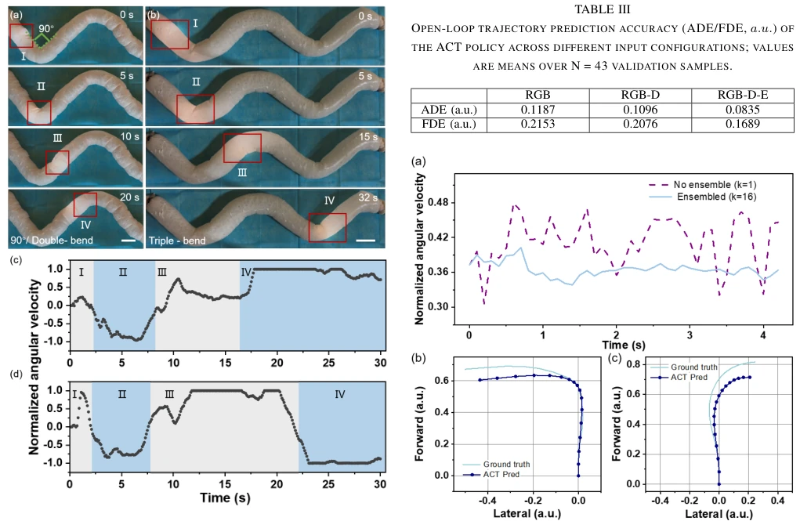
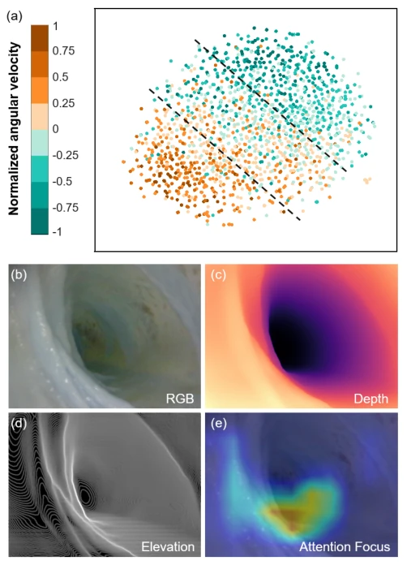

This paper attempts to address the longstanding challenge of endoscopic robot navigation: navigating aimlessly within a colon characterized by weak texture, high reflectivity, and significant viscoelastic interactions. The authors developed a system named ColoACT, whose core involves feeding RGB depth maps combined with pseudo-elevation maps into the ACT policy, supplemented by temporal ensembling to smooth actions. Hardware-wise, a micro-gear driven robot, BGER, was employed. Although the success rate in pig colon experiments appears satisfactory (85% in straight segments), essentially it remains a conventional operation of "imitation learning + multi-modal perception" and does not resolve the fundamental sim-to-real gap. However, introducing gradient elevation maps to enhance fold features is indeed more sophisticated than relying solely on depth maps, at least enabling the model to distinguish between "paths" and "walls". Unfortunately, current validation is limited to ex vivo pig intestines, and issues regarding in vivo peristalsis and lubrication must be deferred.
Colonoscopy navigation is challenging due to variable anatomical structures, weak texture, severe reflection, and strong tissue viscoelastic interactions [5], [6]. Existing geometry-driven methods rely on handcrafted features and switching logic, often failing when visual cues are unreliable [7]-[9]. While learning-based methods can handle nonlinear dynamics, depth estimation under weak texture is prone to spatiotemporal inconsistency or excessive smoothing, masking fold details [13], [14]. Reinforcement learning is constrained by simulators' inability to model viscoelastic contact, resulting in a sim-to-real gap [15], [16]. Behavior Cloning (BC) is susceptible to jitter caused by covariate shift [26]. Therefore, a closed-loop strategy is required that leverages explicit geometric cues to enhance robustness while ensuring smoothness via temporal action generation.
The system is divided into three parts: Perception, Policy, and Control Execution. At the perception end, Depth Anything V2 generates relative depth maps, followed by the Scharr operator calculating gradients to produce pseudo-elevation maps (Elevation), which are concatenated with RGB to form RGB-D-E input, enhancing fold ridge features. At the policy end, Action Chunking Transformer (ACT) is utilized, based on a CVAE architecture; after encoding observations, the latent variable z is sampled, and the decoder predicts future k=16 step action chunks (Action Chunk). To suppress high-frequency jitter in viscoelastic environments, a Temporal Ensembling mechanism is employed, applying Boxcar filtering averaging to overlapping action chunks to generate smooth linear and angular velocity commands. Hardware-wise, BGER adopts bevel gear transmission to counteract radial forces, equipped with micro motors and monocular vision modules, ensuring stable propulsion and visual feedback within narrow intestinal cavities.

Fig. 1. System Overview of the proposed ColoACT for Autonomous Navigation of the Bevel-Gear-Based Endoscopic Robot. (a) Framework Overview: The framework integrates a multi-cue perception module (RGB, relative depth, and pseudo-elevation, RGB-D-E) with an ACT-based control policy. Left: ot = [Irgb t , Dt, Et] is formed using Depth Anything V2-Base for relative depth and Scharr gradients for pseudo-elevation. Right: The policy predicts an action chunk at:t+k−1, which is synthesized via Temporal Ensembling to generate smooth actuation commands at (vt,ωt). (vt,ωt) represents the normalized linear velocity and angular velocity. (b) The actual navigation of the BGER in the porcine colon. (c) The assembled BGER, with dimensions of 24 × 20 × 34 mm. (d) The overall design of the BGER. (e) Transmis

Fig. 2. Visualization and Stability Analysis. (a) Multi-Cue inputs: RGB, relative depth, and pseudo-elevation map. (b) Temporal standard deviation heatmaps (N = 50); the red line marks the sampling row. (c) Dynamic consistency sequence showing stable feature evolution. Cross-sectional profiles at the sampling row of (d) Depth and (e) Elevation. Black lines denote the mean signal, while yellow clusters show raw noise distribution, confirming spatial peak localization.
Zero-shot validation was performed on ex vivo pig colon (~60cm), covering straight segments, curved segments, and complex winding paths. Comparison baselines included ACT with RGB/RGB-D input and BC strategy with RGB-D-E input. Primary metrics were success rate, normalized angular jerk, and trajectory prediction error (ADE/FDE). Results showed that RGB-D-E ACT achieved success rates of 85.4% and 72.5% in straight and curved segments respectively, significantly outperforming other input configurations. The BC baseline exhibited angular jerk as high as 60 due to lack of temporal modeling, whereas ColoACT reduced it to below 5. Ablation studies demonstrated that pseudo-elevation maps reduced ADE by 23.8%, and temporal ensembling effectively filtered high-frequency noise from the generation policy. Success rates were 70% and 60% respectively in 90-degree turns and double-bend sequences, verifying long-horizon geometric context encoding capabilities.

Fig. 3. Validation of autonomous navigation in ex-vivo porcine colon. Experiment in (a) Straight colon and (b) Curved colon. The movement of the BGER under weak texture conditions using (c) RGB-D-E based BC and (d) ColoACT policy. Inset photo shows the inside texture of the colon, Scale bar: 5 mm. The normalized linear velocity of (e) RGB-D-E based BC policy and (f) ColoACT policy when facing the weak texture.

Fig. 4. Experiment of ColoACT in complex colon, (a) 90° turns / double- bend and (b) triple-bend, Scale bar: 5 mm. The normalized angular velocity of the following (c) 90° turns / Double-bend and (d) Triple-bend colons.

Fig. 6. Semantic and attention analysis of policy behavior. (a) t-SNE visualization of the latent space, colored by normalized angular velocity, showing a structured and continuous manifold aligned with steering intent. (b-d) Example observations: RGB image, depth map, and pseudo-elevation cue. (e) Grad-CAM visualization of the visual backbone highlights atten- tion concentrated on the navigable lumen region and relevant anatomical boundaries during turning.